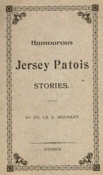
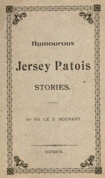

1848 - 21/8/1918
 Ph'lippe Le Sueur Mourant êcrivit souos l'nom d'Bram Bilo et avait d'aut's noms-d'plieunme étout. I' fut né en 1848 à Saint Saûveux, mais i' s'en fut en Tèrre-Neuve coumme janne houmme. I' r'vînt en Jèrri en 1880.
Ph'lippe Le Sueur Mourant êcrivit souos l'nom d'Bram Bilo et avait d'aut's noms-d'plieunme étout. I' fut né en 1848 à Saint Saûveux, mais i' s'en fut en Tèrre-Neuve coumme janne houmme. I' r'vînt en Jèrri en 1880.
Il êcrivit des pièches en Jèrriais et en Français pouor La Chronique de Jersey, La Nouvelle Chronique de Jersey, et pis Les Chroniques de Jersey, et des pièches en Jèrriais étout pouor lé Morning News et l'Evening Post.
Êtant fèrmyi d'mêtchi, i' fut juge dé beurre ès Shows, et êcrivit un livret entouor la vaque dé Jèrri: “The Dairy Queen”. Il înventit lé “Jersey Baby Churn” et fît du conmèrce auve d'la g'lée d'pommes.
Ses caractéthes, Bram Bilo et sa fanmil'ye, 'taient bein populaithes - et nou peut dithe qué l'histouaithe dé Bram Bilo à la vendue est un classique d'la littéthatuthe Jèrriaise.
I' mouothit à “Rutland House” à La Preunmié Tou l'21 d'Août 1918.

 

Èrpubliés dans Les Nouvelles Chroniques du Don Balleine:
| An 'appy Clismus à touos les Jerriais! | II/7:26 |
| The Chief enlightens Mr. Pain | III/6:8 |
| A famous wonder recipe | III/7:2 |
| Funeral postponed - Leg comes off | III/2:14 |
| Further Attempts to wrestle with an income of £4,000 per Day | III/6:30 |
| How Charles has Tea with the Pains | II/15:2 |
| How Lonore and Dad Tricked Mummy | II/11:25 |
| How Lonore Became a Mascot | II/2:22 |
| How Piteur was Umpire at a Cattle Show | IV/9:26 |
| How the gas increase vexes the family | IV/11:10 |
| How the scandal was averted | IV/12:20 |
| How the Stray Lamb Came Back | II/14:9 |
| How to prepare and cook ormers | II/1:14 |
| Lonore as a Dairymaid | II/10:28 |
| A Lovely Outing by the Sea | II/16:22 |
| Missis Pain discourses on Sunday observance | IV/7:6 |
| More incidents of the great gale! | III/11:23 |
| A most improbable adventure | IV/14:6 |
| New Years Resolutions | III/9:20 |
| Piteur Has Thoughts of Becoming a Candidate | IV/2:10 |
| Piteur reports on Petty Court | IV/8:6 |
| Santa Claus and Lonore's Stocking | II/3:22 |
| Les tribulations de Piteur Pain | II/4:22 |

Èrpubliés dans Bram & Elie (2018):
C = Chronique de Jersey
NC = Nouvelle Chronique de Jersey
Cs = Chroniques de Jersey
EP = Evening Post
MN = Morning News
JWP = Jersey Weekly Post
* èrpubliées dans les Nouvelles Chroniques du Don Balleine
* èrpubliées dans Bram & Elie (2018)